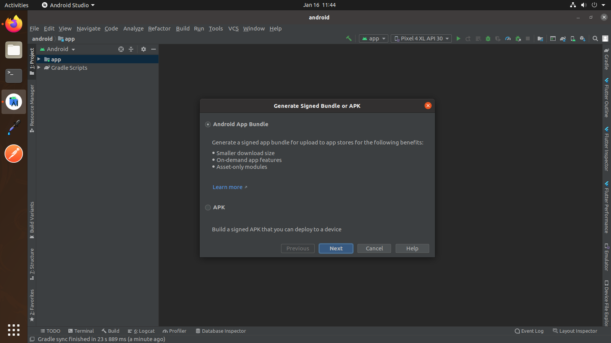
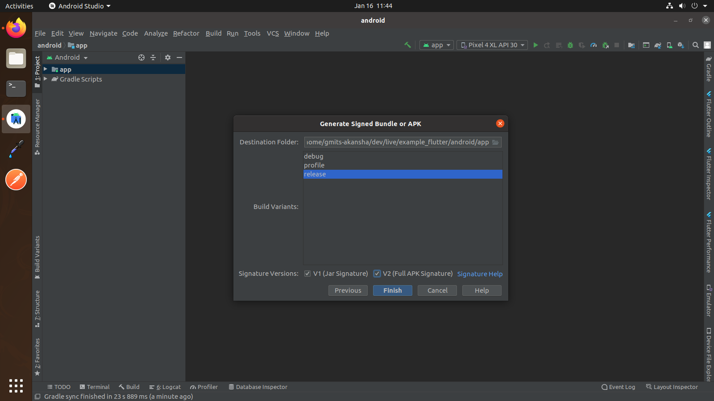

- Première version
Introduction à la Diso-gestion
Le produit "Diso-gestion de l'entreprise smart diso" est une application web conçue pour faciliter la gestion des activités au sein de l'entreprise. Ses principales fonctionnalités sont :
- Gestion des présences du personnel :
- Gestion des demandes de permissions :
- Gestion des stagiaires :
Utilisation d'un système de pointage par QR code pour enregistrer les arrivées et départs du personnel. Génération de rapports de présence.
Permet aux employés de soumettre des demandes de permissions (congés, absences, etc.). Système d'approbation des demandes par les responsables. Historique des demandes de permissions.
Permet d'enregistrer et de suivre les informations des stagiaires. Génération d'attestations de stage pour les stagiaires

Prérequis android
Android Studio: Flamingo 2022.2.1
Flutter: 3.16.0
Dart version: 3.2.0
Prérequis web
CodeIgniter 5.4
Bootstrap 5.0
AJAX and jQuery
Composer
SQLite
Introduction à Flutter
Flutter est la boîte à outils d'interface utilisateur de Google permettant de créer de superbes applications compilées nativement. demandes demobile, web, et desktop de base de code unique. C'est très facile à apprendre et actuellement il devient de plus en plus populaire. Avec ce blog post, vous apprendrez quelques éléments de base sur Flutter et après l'avoir lu, vous sera capable de créer une application simple en utilisant cette technologie.
Cliquez icipour consulter plus de détails sur battement.
Présentation du projet
Ce projet est une application web développée en utilisant le framework PHP CodeIgniter dans sa version 5.4. L'objectif principal est de créer une interface conviviale et responsive, en exploitant les fonctionnalités offertes par le framework. de base de code unique. C'est très facile à apprendre et actuellement il devient de plus en plus populaire. Avec ce blog post, vous apprendrez quelques éléments de base sur Visual code et après l'avoir lu, vous sera capable de créer une application simple en utilisant ce logiciel.
Outils et configuration
Prérequis
- Flutter & Dart SDK
- Anyone IDE Android Studio (Recommended), Visual Studio Code or IntelliJ IDEA
- Pour modifier ce projet, vous devez avoir installé et configuré Flutter et Dart avec succès sur votre ordinateur.
- Configurez votre éditeur - Installez le Plugins Flutter et Dart.
-
Si le SDK Android est installé et configuré, pour installer Flutter, vous
avez juste besoin de:
- Téléchargez le SDK Flutter depuis le site officiel et extrayez-le.
- Ajoutez le chemin du SDK précédemment extrait à votre variable PATH
- Exécutez l'outil Flutter Doctor pour vérifier si tout est configuré correctement.
- Toutes les étapes ci-dessus sont mentionnées ici : https://flutter.dev/docs/get-started/install/
Outils de développement
IDE :
Utilisez un IDE puissant comme PhpStorm, Visual Studio Code ou Sublime Text pour bénéficier d'une expérience de codage optimale avec CodeIgniter.Git :
Utilisez un système de gestion de version comme Git pour le contrôle de version de votre code source.Composer:
Installez et gérez les dépendances de votre projet avec Composer, l'outil de gestion des paquets de PHP.SQLite Browser :
Utilisez un outil graphique comme DB Browser for SQLite pour visualiser et interagir avec la base de données SQLite.Android Studio – Windows
- Télécharger Android Studio - https://developer.android.com/studio/
- Obtenez le SDK Flutter - https://flutter.dev/docs/get-started/install
- En savoir plus sur Android Studio - https://developer.android.com/studio/intro/
En savoir plus sur Android Studio
1 Téléchargez le bundle d'installation suivant pour obtenir la dernière version stable de le SDK Flutter :
2 Extrayez le fichier zip et placez le flutter contenu dans l'emplacement souhaité. emplacement d'installation du SDK Flutter (par exemple, C:\src\flutter ; ne pas installez Flutter dans un répertoire comme C:\Program Files\ qui nécessite une élévation de privilèges ).
Étape 2 : Mettez à jour votre chemin
Si vous souhaitez exécuter des commandes Flutter dans la console Windows standard, suivez ces étapes pour ajouter Flutter à la variable d'environnement PATH : Dans la barre de recherche Démarrer, saisissez « env » et sélectionnez Modifier les variables d'environnement. pour votre compte. Sous la Variables utilisateur vérifiez s'il y a une entrée appelée Chemin:
- Si l'entrée existe, ajoutez le chemin complet à flutter\bin en utilisant ; comme un séparateur des valeurs existantes.
- Si l'entrée n'existe pas, créez une nouvelle variable utilisateur nommée Path avec le chemin complet vers flutter\bin comme sa valeur.
- Info
- Notez que vous devez fermer et rouvrir toutes les fenêtres de la console existantes pour que les changements entrent en vigueur.
Étape 3 : Exécutez Flutter Doctor
À partir d'une fenêtre de console contenant le répertoire Flutter dans le chemin (voir ci-dessus), exécutez la commande suivante pour voir s'il existe des dépendances de plate-forme dont vous avez besoin terminez la configuration :
c:\src\flutter>flutter doctorvisual studio
- Télécharger visual studio - https://code.visualstudio.com/download
Cliquez sur le bouton "Télécharger" pour obtenir le fichier d'installation correspondant à votre système d'exploitation (Windows, macOS ou Linux).
Android Studio – macOS
- Télécharger Android Studio - https://developer.android.com/studio/
- Download Xcode - https://apps.apple.com/us/app/xcode/id497799835?mt=12
- Obtenez le SDK Flutter - https://flutter.dev/docs/get-started/install
- En savoir plus sur Android Studio- https://developer.android.com/studio/intro/
Étape 1 : Obtenez le SDK Flutter
- Téléchargez le bundle d'installation suivant pour obtenir la dernière version stable du SDK Flutter :
- Téléchargez le SDK et extrayez le fichier téléchargé, double-cliquez simplement dessus. et copiez simplement le dossier extrait et collez-le à l'emplacement souhaité (par exemple exemple, Documents\flutter).
Étape 2 : Mettez à jour votre chemin
- Warning
- La variable Path doit être mise à jour pour accéder à la commande « flutter » depuis le terminal. toi peut simplement mettre à jour la variable de chemin pour la fenêtre de terminal actuelle uniquement. et si tu veux pour accéder aux commandes Flutter depuis n'importe où dans le terminal, nous devons mettre à jour le chemin du SDK en permanence.
Pour mettre à jour la variable PATH, nous devons ouvrir le terminal.
Pour mettre à jour la variable PATH pour la fenêtre de terminal actuelle uniquement, entrez cette commande "exporter PATH="$PATH:`pwd`/flutter/bin"" et appuyez sur la touche Entrée.
Pour mettre à jour la variable PATH de manière permanente, puis ouvrez ou créez.bash_profile déposer. pour ouvrir ou créer ce fichier, puis entrez"sudo open -e $HOME/.bash_profile"et appuyez sur la touche Entrée.
Ajoutez la ligne ci-dessous au fichier bash_profile au bas de tout autre contenu. "exporter PATH="$PATH:[PATH_TO_FLUTTER_GIT_DIRECTORY]/flutter/bin"" comme [PATH_TO_FLUTTER_GIT_DIRECTORY] est le chemin réel du dossier SDK.Exécutez cette commande sur le terminal "source $HOME/.bash_profile"pour actualiser CHEMIN variables.
Vérifiez ensuite si notre SDK est installé avec succès ou non.
Vous êtes maintenant prêt à exécuter des commandes Flutter dans la console Flutter !
Exécutez "flutter doctor" dans le terminal. Si vous obtenez une liste de contrôle de exigences du SDK Flutter, cela signifie que le SDK est installé avec succès sur votre machine. et vous pouvez commencer à créer des applications Flutter sur votre machine.
Si vous rencontrez un problème lors de la configuration de l'environnement dans Macos, veuillez vous connecter en ligne. Clicque ici
Android Studio – Linux
- Télécharger Android Studio - https://developer.android.com/studio
- Obtenez le SDK Flutter - https://flutter.dev/docs/get-started/install/linux
- En savoir plus sur Android Studio - https://developer.android.com/studio/intro/
Étape 1 : Obtenez le SDK Flutter
- Téléchargez le bundle d'installation suivant pour obtenir la dernière version stable du SDK Flutter :
- Téléchargez le SDK et extrayez le fichier téléchargé, double-cliquez simplement dessus. et copiez simplement le dossier extrait et collez-le à l'emplacement souhaité (par exemple exemple, Documents\flutter).
Étape 2 : Mettez à jour votre chemin
- Avertissement
- La variable Path doit être mise à jour pour accéder à la commande « flutter » depuis le terminal. toi peut simplement mettre à jour la variable de chemin pour la fenêtre de terminal actuelle uniquement. et si tu veux pour accéder aux commandes Flutter depuis n'importe où dans le terminal, nous devons mettre à jour le chemin du SDK en permanence.
Vous souhaiterez probablement mettre à jour cette variable de manière permanente, afin de pouvoir
exécutez des commandes Flutter dans n’importe quelle session de terminal. Pour mettre à jour la variable PATH, nous avons besoin
pour ouvrir le terminal.
exporter PATH="$PATH:[PATH_TO_FLUTTER_GIT_DIRECTORY]/flutter/bin"- executer
Vous souhaiteriez
probablementmettre à jour cette variable de manière permanente, afin de pouvoir exécutez des commandes Flutter dans n’importe quelle session du terminal. Pour mettre à jour la variable PATH, nous avons besoin pour ouvrir le terminal. - Vérifiez que le
flutter/binLe répertoire est maintenant dans votre PATH en exécutant :
echo $PATHVérifiez que le flutter
La commande est disponible en exécutant :
qui flotteMise en route (Build & Run)
Important
Toutes les étapes ci-dessous doivent être suivies pour créer et exécuter l'application.
Télécharger le projet
Téléchargez et recherchez le dossier de votre projet, utilisez votre IDE préféré (Android Studio / Visual Studio Code / IntelliJ IDEA) à exécuter le projet.

Obtenir les dépendances
Après avoir chargé le projet avec succès, exécutez la commande suivante dans le terminal
pour installer toutes les dépendances répertoriées dans le pubspec.yaml
fichier dans le dossier du projet
répertoire racine ou cliquez simplement sur Pub get
dans le fichier pubspec.yaml si vous ne le faites pas
souhaitez utiliser la commande.
flutter pub get Important
Toutes les étapes ci-dessous doivent être suivies pour créer et exécuter l'application

Créer et exécuter une application
- Localisez la barre d'outils principale d'Android Studio.
- Dans le cible sélecteur,sélectionnez un appareil android pour exécuter l’application. Si aucun n’est répertorié comme disponible, sélectionnez Tools > Android > AVD Manager et créez-en un là-bas. Pour plus de détails, voir Managing AVDs.
- Cliquez sur l'icône d'exécution dans la barre d'outils ou appelez l'élément de menu Run > Run.

Une fois la création de l'application terminée, vous verrez l'application sur votre appareil.
Si vous n'utilisez pas Android Studio ou IntelliJ, vous pouvez utiliser la ligne de commande pour exécuter votre application en utilisant la commande suivante
Important
L'étape ci-dessous nécessite que flutter path soit défini dans vos variables d'environnement. Voir https://flutter.dev/docs/get-started/install/windows
flutter runVous verrez ci-dessous un écran similaire après avoir créé votre application avec succès
Essayez le rechargement à chaud
Flutter offre un cycle de développement rapide avec Stateful Hot Reload, la possibilité de rechargez le code d'une application en cours d'exécution sans redémarrer ni perdre l'état de l'application. Modifiez la source de l'application, indiquez à votre IDE ou à votre outil de ligne de commande que vous souhaitez rechargez à chaud et voyez le changement dans votre simulateur, émulateur ou appareil.
Important
N'arrêtez pas votre application. laissez votre application fonctionner.
Mise en route (Build & Run)
Important
Voici les étapes pour créer un nouveau projet avec Visual Studio Code :
1. Ouvrir Visual Studio Code :
Lancez Visual Studio Code sur votre ordinateur..2. Créer un nouveau dossier pour le projet
Dans l'explorateur de fichiers de votre système d'exploitation, créez un nouveau dossier pour votre projet. Vous pouvez par exemple le nommer "mon-projet".3. Ouvrir le dossier dans Visual Studio Code
Dans Visual Studio Code, cliquez sur "Fichier" > "Ouvrir le dossier". Sélectionnez le dossier que vous venez de créer pour votre projet.4. Initialiser un dépôt Git (optionnel)
Si vous souhaitez utiliser le contrôle de version Git pour votre projet, ouvrez le terminal intégré de Visual Studio Code (Ctrl+Maj+`) et exécutez la commande suivante : Copier git init Cela créera un dépôt Git dans votre dossier de projet.5.Créer un nouveau fichier
Dans l'explorateur de fichiers de Visual Studio Code, cliquez avec le bouton droit sur le dossier de votre projet et sélectionnez "Nouveau fichier". Donnez un nom à votre nouveau fichier, par exemple "index.html".6.Écrire du code dans le nouveau fichier
Configuration et personnalisation
Configuration Android
- Important
- N'ouvrez/ne modifiez pas le code Android dans Flutter, car Flutter ne compile pas les fichiers Android.
- If you want add/change android code, click on
Tools->Flutter->Open Module Android dans Android Studio Ou File->Open ->open android module dans votre projet
- Important
- Ne changez pas le nom du package à l'intérieur android/app/src/main/AndroidManifest.xml file
- Ouvrez Android Studio.
- Sélectionnez Ouvrir un projet Android Studio existant.
- Ouvrez le répertoire Android dans votre application.
- Attendez que le projet ait été synchronisé avec succès. (Ça arrive automatiquement une fois que vous ouvrez le projet, mais si ce n'est pas le cas, sélectionnez Sync Projet avec Gradle Files dans le menu Fichier).
- Maintenant, cliquez sur le bouton Exécuter.
Changer le nom de l'application
- Vous devez vouloir changer le nom de votre application. C'est ainsi que vous pouvez procéder. Suivez l'étape ci-dessous.
- Ouvrez /android/app/src/main/AndroidManifest.xml et spécifiez le nom votre application .
<manifest xmlns:android="http://schemas.android.com/apk/res/android" package="com.example">
<uses-permission android:name="android.permission.INTERNET" />
<uses-permission android:name="android.permission.ACCESS_NETWORK_STATE" />
<application
android:name="io.flutter.app.FlutterApplication"
android:label="YOUR_APPLICATION_NAME"
android:icon="@mipmap/ic_launcher">
<activity>
Changer l'icône de l'application
- Parcourez votre image et cliquez sur l'icône Télécharger. Après avoir généré avec succès, remplacez toutes les icônes dans les dossiers respectifs :
Voir Comment générer une icône d'application ?
- /mipmap-hdpi in /android/app/src/main/res/ folder
- /mipmap-mdpi in /android/app/src/main/res/ folder
- /mipmap-xhdpi in /android/app/src/main/res/ folderr
- /mipmap-xxhdpi in /android/app/src/main/res/ folder
- /mipmap-xxxhdpi in /android/app/src/main/res/ folder
- Avertissement
- Le nom de l'icône de l'application doit être ic_launcher
Modifier l'ID de l'application
- Suivez les étapes ci-dessous pour modifier votre identifiant d'application.
- Ouvrir /android/app/build.gradle
- Allez dans votre projet et ensuite Tools -> Flutter -> open pour l'édition dans Android Studio comme indiqué ci-dessous
- Si votre option de 1ère étape n'est pas disponible, sélectionnez File -> open -> Select main folder -> android.
- Ouvrez le projet dans une nouvelle fenêtre
- Attendez quelques instants jusqu'à la synchronisation du projet. Après cela, allez à Build -> GenerateSigned Bundle/APK...
- Sélectionnez Android App Bundle ou l’option APK selon vos besoins. (Android App Bundle est la meilleure solution) et cliquez sur le bouton Suivant.
- Sélectionnez l'option Créer un nouveau... pour générer une nouvelle clé signée (lorsque vous publiez votre application pour la première fois) et remplissez toutes les options. Refer this link
- Cliquez sur le bouton Suivant et vous obtiendrez l'écran suivant...
- Attendez un moment jusqu'à ce que le processus Gradle Build Running soit terminé. Et enfin, vous obtiendrez le Generate Signed APK : (APK) généré avec succès. à partir de là, cliquez sur l'option Localiser pour obtenir l'emplacement de votre clé APK générée.
defaultConfig {
applicationId "YOUR_APPLICATION_ID"
minSdkVersion 21
targetSdkVersion 31
versionCode 1
versionName "1.0.0"
testInstrumentationRunner "androidx.test.runner.AndroidJUnitRunner"
}
Générer un APK signé





Sélectionnez Variantes de construction - versions Release et Signature respectivement V1 et V2, comme indiqué ci-dessus, capture d'écran, puis cliquez sur le bouton Terminer.
iOS Configuration
Ouvrir le projet dans Android Studio
- Ouvrez Android Studio dans votre projet.
- Ouvrez le terminal dans Android Studio.
- Obtenir une publication.
- Ouvrez le terminal CD iOS.
- installation du pod.
- exécuter le projet dans Xcode.
Ouvrir le projet dans Xcode
- Ouvrir Xcode
- Sélectionnez Ouvrir un autre projet.
- Ouvrez le répertoire iOS dans votre application.
- Maintenant, cliquez sur le bouton Terminé.
Changer le nom du paquet
- Sélectionnez l'icône de votre fichier de projet dans le panneau Groupe et fichiers.
- Puis sélectionnez Cible -> Onglet Infos.
- Enfin, changez le nom du bundle.

Modifier l'identifiant du bundle.
Bundle Id est un identifiant unique de votre application sur iOS et MacOS. iOS et MacOS utilisez-le pour reconnaître les mises à jour de votre application. L'identifiant doit être unique pour votre application.
- Sélectionnez l'icône de votre fichier de projet dans le panneau Groupe et fichiers.
- Sélectionnez l'onglet Général.
- Après Sélectionner l'onglet Général, vous pouvez voir les détails de votre candidature.
- Dans la section Identité, renommez votre identifiant de bundle.
Modifier les icônes d'application
- voir Comment générer des icônes d'application ?
- Dans le panneau Groupes et fichiers, recherchez le dossier « Assets.xcassets ».
- Dans le dossier Assets.xcassets, remplacez AppIcon.
v1.0.0(28 June 2022)
SDK Flutter non disponible
Téléchargez le SDK et pointez le chemin du dossier SDK dans vos futurs projets.
Il existe différentes sources que vous pouvez essayer
- Vous pouvez le cloner depuis le dépôt Github
- Télécharger le SDK fichier zip + extrayez-le après le téléchargement
- Vous pouvez également télécharger n'importe quelle version (y compris plus ancien) à partir d'ici (Pour Mac, Windows, Linux)
Voici quelques-unes des principales erreurs courantes que l'on peut rencontrer lors du développement web : Erreurs de syntaxe HTML/CSS/JavaScript : Fautes de frappe, oubli de balises fermantes, utilisation incorrecte de la syntaxe, etc. Problèmes de responsive design : Affichage incorrect sur différents appareils et tailles d'écran, layout cassé, éléments qui ne s'adaptent pas. Problèmes de compatibilité entre navigateurs : Comportements différents selon les navigateurs (Chrome, Firefox, Safari, Edge, etc.), problèmes d'affichage ou de fonctionnalités. Problèmes de performance : Chargement trop lent de la page, images/scripts trop lourds, code inefficace.
Problèmes d'accessibilité : Manque de prise en compte des utilisateurs handicapés (contrastes, navigation au clavier, etc.). Problèmes de sécurité : Vulnérabilités XSS (Cross-Site Scripting), CSRF (Cross-Site Request Forgery), injection SQL, etc. Problèmes de débogage : Difficultés à identifier et résoudre les bugs, erreurs dans la console du navigateur.
Problèmes de référencement (SEO) : Mauvais usage des balises sémantiques, manque d'optimisation des images et du contenu. Problèmes de gestion de projet : Mauvaise organisation, manque de communication, difficultés à respecter les délais. Problèmes liés à la maintenance : Difficultés à faire évoluer le site web, à mettre à jour les technologies utilisées. La clé pour éviter ces problèmes est de bien se former, de suivre les bonnes pratiques, de tester régulièrement son site web et de rester à jour sur les dernières tendances et évolutions du web.
Merci d'avoir acheté notre application
Merci d'avoir acheté notre application ! Nous sommes heureux que vous ayez trouvé ce que vous cherchiez. Notre objectif est que vous soyez toujours satisfait de ce que vous avez acheté chez nous, alors n'hésitez pas à nous faire savoir si votre expérience d'achat n'a pas été excellente. Nous avons hâte de vous revoir.